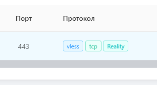

| Ник | Пост | Дата |
|---|---|---|
| eQe | В идеале хочется иметь VLESS + Reality для TCP на порту 443(насколько верно я понимаю, для TCP - для маскировки под обычный TLS трафик) + UDP на том же порту (так UDP трафик будет выглядеть менее подозрительным?). | 2024-10-09T12:34:00.069Z |
| PlavaliZnaem( ) | да? Может я чегой-то не понимаю, но у меня вроде маршрутизируется. В логах вижу вот это: настроен xkeen на кинетике | 2024-10-09T12:50:22.492Z |
| eQe | а какие были прописаны inbounds? | 2024-10-09T13:13:43.685Z |
| PlavaliZnaem( ) | // Исходящее соединение ] | 2024-10-09T13:20:36.919Z |
| 0ka(0ka) | vless это TCP прокси, проксирует TCP и UDP трафик внутри множества TCP потоков. hysteria это UDP прокси, проксирует TCP и UDP трафик внутри одного UDP потока. shadowsocks проксирует TCP и UDP внутри множества TCP и UDP потоков. | 2024-10-09T15:20:58.163Z |
| Lost |  все прекрасно работает вот так | 2024-10-10T08:21:36.973Z |
| korenkonder(Korenkonder) |
Может и внутри одного TCP потока с помощью мультиплексирования. | 2024-10-10T09:11:06.556Z |
| 0ka(0ka) | ну нормальной имплементации я еще не видел, yamux в sing-box ближе всего к идеалу, но крашится из-за него слишком часто | 2024-10-10T09:23:15.955Z |
| korenkonder(Korenkonder) | В Xray оно вроде как нормально работает. Да и на захвате траффика с помощью WireShark, как и на просмотре активности в Procmon, я вижу только один коннект от Xray к серверу, хотя тот же Discord параллельно подключается к нескольким серверам. | 2024-10-10T09:30:41.548Z |
| 0ka(0ka) |
далеко нет, во первых там ограничение на 1024 соединения внутри мультиплекса, которое применяется к каждому днс запросу из-за чего лимит быстро исчерпывается, а во вторых если начать качать какой-то файл, то остальные соединения в мультиплексе просто встанут, вы ни 1 сайт больше открыть не сможете пока файл не скачается | 2024-10-10T09:41:39.359Z |
| korenkonder(Korenkonder) |
Которое тянется уже как 6 лет… Не замечал подобного у себя. Спокойно проходят пакеты в обе стороны при полной загрузке соединения как на скачивание, так и на отдачу. | 2024-10-10T14:42:13.589Z |
| korenkonder(Korenkonder) |
Посмотрел сейчас. Да, проблемка с исчерпанием запросов есть, но она по UDP, так как там невозможно отследить закрытие подключения. С TCP же оно закрывает соединение и освобождает “сессию” внутри мультиплекса, и он может взять новое подключение. | 2024-10-10T19:48:08.457Z |
| REM1X | Прошу прощения за некропостинг. Как и когда в это ограничение в 1024 чего то там случается? Нельзя его просто периодически сбрасывать, там раз в сутки например? А то я только вчера настроил xkeen на своей гиге, сегодня кое-как донастроил чтобы дискорд работал. На компе уже давненько крутится nekobox с устраивающими настройками и вроде как все норм, но хочется более универсальное и бесшовное решение. | 2024-12-15T10:15:43.778Z |
| 0ka(0ka) |
мне кажется вы не поняли поста, да и mux по дефолту не включен и большинству пользователей не нужен. я перепроверил: mux начинает лагать при качке файлов только если у вас подключение через CDN, с прямым подключением лаг мал и sysctl параметром можно еще сильнее уменьшить. короче забей, все нормально у тебя | 2024-12-15T11:30:42.615Z |